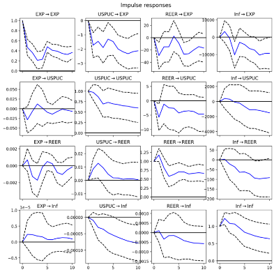

Trade Policy Uncertainty and Export Volatility
A long-run and volatility-side look at how US trade policy uncertainty feeds into Indonesian exports — both the level effect on export volumes and the persistence of the volatility it creates.
At a glance
- Method
- VECM-GARCH
- Sample
- 128 monthly observations
- Driver
- US trade policy uncertainty
- Toolchain
- R
Key results
The question
Policy uncertainty is usually treated as a level shock — it lowers trade, then trade recovers. This project asks two separate questions: how large is the long-run level effect on Indonesian exports, and does the uncertainty itself leave a lasting mark on export volatility, independent of the level effect.
Methodology
A Vector Error Correction Model captures the long-run cointegrating relationship between US trade policy uncertainty (USPUC), the real effective exchange rate (REER), inflation, and Indonesian export volumes across 128 monthly observations, with a GARCH(1,1) specification layered on each series’ residuals to characterize volatility persistence separately from the level relationship. Impulse response functions trace how long a given uncertainty shock takes to work through the system.
Findings
A one-unit rise in US policy uncertainty reduces Indonesian exports by roughly 52 units in the long run, with the effect persisting through 8 or more periods according to the impulse response analysis. Of the four variables in the system, only exports themselves adjust significantly back toward that long-run relationship when a deviation occurs (α = −0.0168, p < 0.001) — USPUC, REER, and inflation are all statistically weakly exogenous in this system, meaning exports do the equilibrating, not the other way around. The correction is slow either way: about 1.68% of a deviation closes per month.
Volatility persistence isn’t uniform across the system. Export volatility itself sits close to the IGARCH (unit-root) boundary (α+β ≈ 0.94), as does inflation (≈ 0.94) — both consistent with a “sticky” risk regime that doesn’t quickly normalize after a shock. REER volatility, by contrast, shows almost no persistence at all (α+β ≈ 0.06, with neither parameter individually significant) — exchange-rate volatility in this system behaves close to white noise, a genuinely different dynamic from the export and inflation series.
Adjustment dynamics
Error-correction (α) coefficients from the VECM — how strongly each variable responds to a deviation from the long-run cointegrating relationship. A larger, more significant magnitude means that variable does more of the work restoring equilibrium.
| Equation | α (ec1) | Std err | z | p |
|---|---|---|---|---|
| EXP | −0.0168 | 0.004 | −4.399 | < 0.001 |
| USPUC | −0.0012 | 0.001 | −1.494 | 0.135 |
| REER | −4.76e-05 | 3.23e-05 | −1.477 | 0.140 |
| Inflation | −2.02e-07 | 1.06e-07 | −1.910 | 0.056 |
| Variable | β | Std err | z | p |
|---|---|---|---|---|
| EXP (normalized) | 1.0000 | — | — | — |
| USPUC | 51.93 | 15.33 | 3.387 | 0.001 |
| REER | 734.66 | 315.56 | 2.328 | 0.020 |
| Inflation | 3.094e+05 | 6.10e+04 | 5.071 | < 0.001 |
Volatility persistence
Univariate GARCH(1,1) fit separately on each series. α+β close to 1 means shocks to that series’ volatility decay very slowly (an IGARCH-like “sticky” regime); close to 0 means volatility reverts quickly.
| Series | ω | α1 | β1 | α + β |
|---|---|---|---|---|
| EXP | 0.065 ns | 0.114 ns | 0.824 *** | 0.938 |
| USPUC | 0.152 ** | 0.067 ns | 0.785 *** | 0.852 |
| REER | 0.936 * | 0.019 ns | 0.044 ns | 0.063 |
| Inflation | 0.032 ns | 0.106 ns | 0.833 *** | 0.939 |
*** p<0.001 ** p<0.01 * p<0.05 ns = not significant at 5%
Impulse responses
Full orthogonalized IRF grid across all four series, 10-period horizon, dashed lines are 95% bounds. The USPUC→EXP panel (top row, second column) is the headline result: a policy-uncertainty shock produces a negative, slow-decaying response in exports that hasn’t fully died out by period 10.
